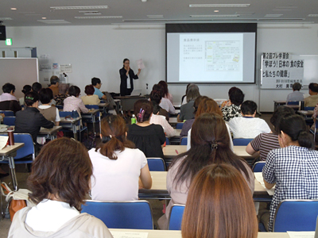
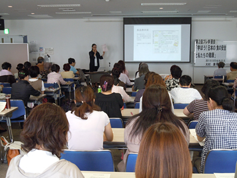

10月に開催される第49回埼玉県消費者大会に向けた第2回プレ学習会が7月18日（木）10時から浦和コミュニティセンター9階の第15集会室でおこなわれました。「学ぼう！日本の食の安全と私たちの健康」のテーマで、朝日新聞社生活グループ編集委員の大村美香氏を講師に118人が参加しました。
|
|
|
 10月に開催される第49回埼玉県消費者大会に向けた第2回プレ学習会が7月18日（木）10時から浦和コミュニティセンター9階の第15集会室でおこなわれました。「学ぼう！日本の食の安全と私たちの健康」のテーマで、朝日新聞社生活グループ編集委員の大村美香氏を講師に118人が参加しました。 |